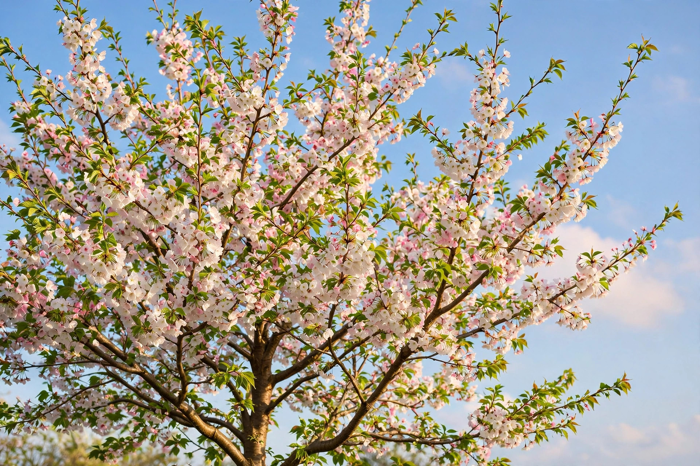

From Wikipedia, the free encyclopedia
| Prunus | |
|---|---|
 | |
| Kingdom: | Plantae |
| Order: | Rosales |
| Family: | Rosaceae |
| Subfamily: | Amygdaloideae |
| Genus: | Prunus L. |
| Type species | Prunus domestica |
Prunus is a genus of trees and shrubs in the rose family, Rosaceae, comprising many of the best-known stone fruits: plums, cherries, peaches, nectarines, apricots and almonds. The genus includes several hundred species, distributed mainly across the temperate regions of the Northern Hemisphere. Members of the genus are characterised by a single large seed enclosed in a hard, woody pit (the "stone") surrounded by fleshy fruit — a drupe.
The name Prunus derives from the Latin name for the plum tree. The genus was described by Carl Linnaeus in Species Plantarum (1753). Taxonomists have historically divided Prunus into several subgenera or even separate genera (such as Prunus sensu stricto for plums, Cerasus for cherries, Amygdalus for almonds and peaches), but molecular phylogenetic studies support treating them as a single large genus.
Prunus species may be deciduous or evergreen trees or shrubs. The leaves are simple, alternate, usually with serrated margins and often with small glands on the leaf stalk. The flowers, borne singly or in clusters, typically have five white or pink petals and numerous stamens; many species flower in early spring before the leaves emerge and are widely planted as ornamentals, most famously the Japanese flowering cherries (sakura).
The fruit is a drupe with a fleshy mesocarp and a single seed within a stony endocarp. The seeds of many species contain the cyanogenic glycoside amygdalin, which can release hydrogen cyanide; the kernels of bitter almond and apricot are notably rich in it.
Modern classifications based on DNA sequence data recognise three subgenera:
Stone fruits are among the most economically important temperate fruit crops. Sweet cherry (Prunus avium), sour cherry (P. cerasus), peach (P. persica), European plum (P. domestica), Japanese plum (P. salicina), apricot (P. armeniaca) and almond (P. dulcis) are cultivated worldwide. Many species are also grown for timber — wild cherry wood is prized in cabinetmaking — and for ornament.
Prunus species are susceptible to a number of diseases, including bacterial canker, silver leaf, plum pox virus (sharka) and the fungal disease black knot in North America.